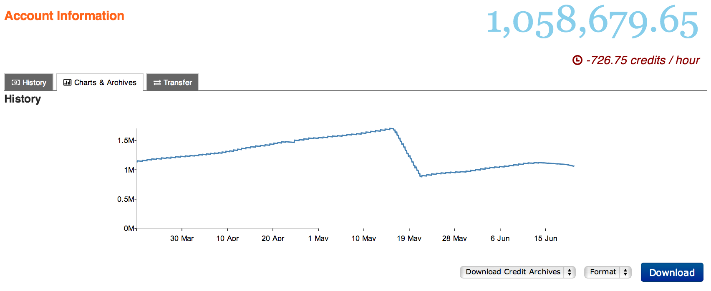
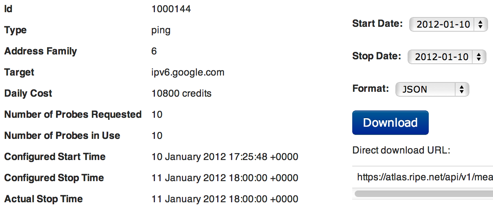
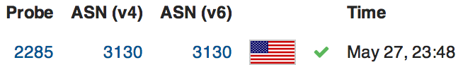

Hands-on: RIPE Atlas
AIMS 2013
Nikolay Melnikov
Jacobs University Bremen
The tutorial takes you through the full RIPE Atlas experience. It starts with an account registration and continues all the way to show you how to programmatically create different measurement types using the world-wide distributed network of RIPE Atlas probes. Initially we make sure that you feel comfortable with RIPE Atlas’ interface. We then introduce two main components of the RIPE Atlas platform: probes and measurements, along with a detailed overview of result structures associated with the latter. At this point you would have accessed measurement results only via web-interface, which may not necessarily always fit the scope of your work. To ease things, RIPE provides a REST API for a quick access to publicly available measurement results using your favorite tool in the command line or directly from your code. Once you feel comfortable with what to expect from the measurement results you will get a chance to create some of your own measurements using both web-interface and RESTful API approaches. In the end of the tutorial you will get a chance to apply for your own RIPE Atlas probe.
This tutorial is given for the first time and we expect it to have numerous glitches and inconsistencies. Therefore, we encourage you to take notes as you progress through the tutorial. We hope to hear about different typographical errors, structural failures and whatever else you think could have been done differently. It is just as crucial to also get feedback on your experience with regard to the content from the RIPE Atlas project. If you made curious observations, found inconsistencies in measurement results, have an idea for the layout improvement or simply created an interesting measurement setup, please make sure to note it down and share with us.
Accessing RIPE Atlas probes via web interface
Create a RIPE NCC account <https://access.ripe.net/registration> by filling out the appropriate form. You should see the following message once “Sign-up” button is clicked
Please navigate to your mailbox and finalize the registration.
Please send me <n.melnikov@jacobs-university.de> the e-mail address that you registered in the previous step. It will allow me to transfer you some Credits, which in turn will allow you to set up your own measurements later in the tutorial.
Once completed, proceed to <https://atlas.ripe.net> and login if still necessary.
Once inside the system, the navigation bar lists all available options. Most of these options are available without logging in. However in order to access the list of probes, measurements and credits one needs to login and navigate to the My Atlas: FirstName LastName menu.
Once RIPE Atlas probes are registered under your name, these would appear under My Atlas → My Probes menu:
“Public Probes” tab lists all publicly available probes.
Click on any probe and have information about it (uptime, connection logs, assigned UDMs, built-in measurements: traceroute first/second hops, ping/ping6 to different root servers) displayed in a new tab.
Most items are interactive. Take some time to investigate the available parameters. Make sure to click on RRDTool graphs for different time resolutions.
All historical logs are available for download using the “Logs” button in the top right corner of probe’s tab. Download some of the log files that are of interest to you and inspect whether there are any differences in JSON structures between the old (2011) and new log files.
In order to see the amount of available credits please navigate to the My Atlas → My Credits menu.
Note: one needs to host a probe in order to start earning Credits. You balance should be 0.00 at this time.
One can see or download the history of Credits balance under the “Charts & Archives” tab.

Credits can also be transferred to other RIPE members.
Accessing UDM results via web interface
By navigating to My Atlas → My Measurements menu one can see the list of all measurements that belong to that user. Here is the list of Ongoing or Stopped measurements for me.
Note: you will not see any measurements since none were created by you :)
Navigate to “Public Measurements” tab in order to see the list of all public Ongoing or Stopped UDMs. In order to navigate to newer measurements use the area at the bottom left. One can also sort measurements by clicking on the appropriate column.
Take some time to investigate the contents of each measurement type by clicking an appropriate row. Use the filtering capability of each column in order to get an easy access to specific UDM types:
Result structures of user-defined measurements
Now is a good time to look at different UDM measurement types. First of all let’s clone our work directory using the following command from the Terminal:
$ git clone https://github.com/fp7-flamingo/aims-2013.git
Alternatively one can download the archive of the work directory using the following URL:
<https://github.com/fp7-flamingo/aims-2013/archive/master.zip>
The ./aims-2013/ directory has the following structure:
aims-2013/
├── README.md
├── doc # tutorial description
├── scripts
└── udm # measurement results
├── dns.json
├── dns6.json
├── ping.json
├── ping6.json
├── pretty-dns.json
├── ssl.json
├── ssl6.json
├── traceroute.json
└── traceroute6.json
All covered measurements are stored under the ./aims-2013/udm/ directory. These particular measurements were selected and pretty-printed in order to ease their investigation. The ./aims-2013/udm/ directory contains source files for this tutorial.
By default RIPE’s JSON files have a compact structure that is not pleasant to investigate. There are multiple ways of converting it to the “human-friendly” format. We use python’s json.tool library module as a script. It will output a JSON file in pretty format, and validate the structure of a JSON file:
$ cat not-pretty-udm.json | python -mjson.tool > pretty-udm.json
Note: file size may increase significantly
Next we overview the structure of different UDMs. These UDMs were selected (almost) randomly. The only criteria was to keep file sizes small. Therefore most of these examples cover a single day of measurements. In order to inspect full files they were placed in the ./aims-2013/udm/ directory.
We encourage you to locate those measurements using RIPE Atlas Measurements interface and explore their structure as you proceed from one UDM structure to another. Make sure to investigate probes that performed the measurement and if they run any other UDMs concurrently, try downloading result files for longer periods of time, converting them to pretty format, and of course - try to spot different error cases in UDMs.
Also, take note of the popularity of different measurement types. This can be achieved using the filter on top of the measurement type column. Take note of the most popular regions and countries where different measurements originate.
UDM structure: ping
Meta-data
Structure snippet
[
{
"avg": 190.72800000000001,
"from": "78.163.192.204",
"msm_id": 1000019,
"min": 170.90299999999999,
"timestamp": 1321635825,
"fw": 0,
"prb_id": 412,
"max": 228.90000000000001,
"dup": 0,
"rcvd": 3,
"sent": 3,
"addr": "91.199.39.2"
},
{
"avg": 121.127,
"from": "77.95.64.207",
"msm_id": 1000019,
"min": 118.82899999999999,
"timestamp": 1321635837,
"fw": 0,
"prb_id": 532,
"max": 124.607,
"dup": 0,
"rcvd": 3,
"sent": 3,
"addr": "91.199.39.2"
},
[...]
]
Fields description
"avg" -- average round-trip time (float)
"from" -- IP address of the probe as known by controller (string)
"msm_id" -- measurement identifier (int)
"min" -- minimum round-trip time (float)
"timestamp" -- unix timestamp (int)
"fw" -- firmware version that produced this result (int)
"prb_id" -- source probe ID (int)
"max" -- maximum round-trip time (float)
"dup" -- number of duplicate packets (int)
"rcvd" -- number of packets received (int)
"sent" -- number of packets sent (int)
"addr" -- IPv6 address of the destination (string)
One can see that the firmware version 0 was used to produce the above result as the measurement was performed back in 2011. Since then many newer version were released. Some of the releases introduced slight changes or additions to the structure of result files. More information about UDM results structure for different firmware version of probes can be found here: <https://atlas.ripe.net/doc/data_struct>. You may also need to consult it in order to understand the erroneous measurement results, or rather - unsuccessful measurement attempts.
UDM structure: ping6
Measurement meta-data

Structure snippet
[
{
"avg": 24.73,
"from": "2001:67c:2104:301::10",
"msm_id": 1000144,
"min": 24.356000000000002,
"timestamp": 1326216457,
"fw": 0,
"prb_id": 994,
"max": 24.978000000000002,
"dup": 0,
"rcvd": 3,
"sent": 3,
"addr": "2a00:1450:400c:c01::68"
},
{
"avg": 33.957999999999998,
"from": "31.18.153.131",
"msm_id": 1000144,
"min": 33.68,
"timestamp": 1326216479,
"fw": 0,
"prb_id": 1336,
"max": 34.167000000000002,
"dup": 0,
"rcvd": 3,
"sent": 3,
"addr": "2a00:1450:400c:c01::68"
},
[...]
]
Fields description
"avg" -- average round-trip time (float)
"from" -- IP address of the probe as known by controller (string)
"msm_id" -- measurement identifier (int)
"min" -- minimum round-trip time (float)
"timestamp" -- unix timestamp (int)
"fw" -- firmware version that produced this result (int)
"prb_id" -- source probe ID (int)
"max" -- maximum round-trip time (float)
"dup" -- number of duplicate packets (int)
"rcvd" -- number of packets received (int)
"sent" -- number of packets sent (int)
"addr" -- IPv6 address of the destination (string)
UDM structure: traceroute
RIPE Atlas uses Paris Traceroute <http://www.paris-traceroute.net> for traceroute measurements in order to combat the issues introduced by load balancers on the paths.
Measurement meta-data

Structure snippet
[
{
"from": "147.28.0.132",
"msm_id": 1009380,
"fw": 4520,
"timestamp": 1369125240,
"proto": "UDP",
"dst_name": "srv0.iad.rg.net.",
"paris_id": 1,
"prb_id": 2285,
"af": 4,
"result": [
{
"result": [
{
"ttl": 57,
"rtt": 81.305999999999997,
"ittl": 24,
"from": "198.180.150.1",
"size": 56
},
{
"ttl": 57,
"rtt": 102.108,
"ittl": 24,
"from": "198.180.150.1",
"size": 56
},
{
"ttl": 57,
"rtt": 66.468999999999994,
"ittl": 24,
"from": "198.180.150.1",
"size": 56
}
],
"hop": 30
}
],
"src_addr": "147.28.0.132",
"endtime": 1369125240,
"type": "traceroute",
"dst_addr": "198.180.150.1",
"size": 40
},
[...]
]
Fields description
"from" -- IP address of the probe as know by controller (string)
"msm_id" -- measurement identifier (int)
"fw" -- firmware version that produced this result (int)
"timestamp" -- unix timestamp for start of measurement (int)
"proto" -- "UDP" or "ICMP" (string)
“dst_name" -- name of the destination (string)
"paris_id" -- variation for the Paris mode of traceroute (int)
"prb_id" -- source probe ID (int)
"af" -- address family, 4 or 6 (integer)
"result" -- variable content, depending on type of response (array)
Each element is an associative array consisting of:
Case: Timeout
"x" -- "*" (string)
Case: Reply
"ttl" -- time-to-live in reply (int)
"rtt" -- round-trip-time of reply (float)
"ittl" -- time-to-live in packet that triggered the error ICMP (int)
"from" -- IPv4 or IPv6 source address in reply (string)
"size" -- size of reply (int)
"hop" -- hop number (int)
"src_addr" -- source address used by probe (string)
"endtime" -- unix time stamp for end of measurement (int)
"type" -- “traceroute” (string)
"dst_ddr" -- IP address of the destination (string)
"size" -- packet size (int)
Watch out for traceroute measurements prior to msm_id: 1002286. The results of those measurements were simply dumped as a string.
[
{
"from": "213.173.231.254",
"msm_id": 1000146,
"fw": 0,
"timestamp": 1326217125,
"prb_id": 1356,
"result": "traceroute to google.com (74.125.79.103), 30 hops max, 38 byte packets NEWLINE 1 192.168.100.1 1.806 ms 1.674 ms 1.924 ms NEWLINE 2 213.173.231.253 2.374 ms 2.236 ms 2.306 ms NEWLINE 3 149.6.136.1 2.485 ms 2.429 ms 2.357 ms NEWLINE 4 130.117.2.149 8.031 ms 7.822 ms 7.827 ms NEWLINE 5 130.117.49.237 17.712 ms 130.117.49.209 17.828 ms 130.117.49.237 17.495 ms NEWLINE 6 149.6.140.58 19.814 ms 19.309 ms 18.841 ms NEWLINE 7 209.85.240.64 19.717 ms 18.743 ms 19.063 ms NEWLINE 8 72.14.236.68 19.766 ms 72.14.239.62 19.680 ms 72.14.236.20 20.148 ms NEWLINE 9 209.85.241.228 19.525 ms 19.376 ms 19.694 ms NEWLINE 10 216.239.49.36 22.856 ms 216.239.49.38 23.431 ms 216.239.49.30 23.326 ms NEWLINE 11 * 209.85.255.130 38.115 ms 209.85.255.122 23.191 ms NEWLINE 12 74.125.79.103 22.828 ms 22.499 ms 23.443 ms NEWLINE"
},
[...]
]
UDM structure: traceroute6
Measurement meta-data
Structure snippet
[
{
"from": "2a00:db40:0:1:280:a3ff:fe91:42e2",
"msm_id": 1007682,
"fw": 4500,
"timestamp": 1365157033,
"proto": "ICMP",
"dst_name": "2001:720:418:cafd:0:0:0:20",
"paris_id": 1,
"prb_id": 4828,
"af": 6,
"result": [
{
"result": [
{
"rtt": 7.0759999999999996,
"ttl": 64,
"from": "2a00:db40:0:1::1",
"size": 88
},
{
"rtt": 2.609,
"ttl": 64,
"from": "2a00:db40:0:1::1",
"size": 88
},
{
"rtt": 2.7970000000000002,
"ttl": 64,
"from": "2a00:db40:0:1::1",
"size": 88
}
],
"hop": 1
},
{
"result": [
{
"rtt": 135.63499999999999,
"ttl": 50,
"from": "2001:720:400::1000:9",
"size": 88
},
{
"rtt": 135.36500000000001,
"ttl": 50,
"from": "2001:720:400::1000:9",
"size": 88
},
{
"rtt": 135.50299999999999,
"ttl": 50,
"from": "2001:720:400::1000:9",
"size": 88
}
],
"hop": 2
},
[...]
{
"result": [
{
"x": "*"
},
{
"x": "*"
},
{
"x": "*"
}
],
"hop": 9
},
{
"result": [
{
"rtt": 141.33600000000001,
"ttl": 235,
"from": "2001:720:418:cafd::20",
"size": 40
},
{
"rtt": 145.947,
"ttl": 235,
"from": "2001:720:418:cafd::20",
"size": 40
},
{
"rtt": 134.89099999999999,
"ttl": 235,
"from": "2001:720:418:cafd::20",
"size": 40
}
],
"hop": 255
}
"src_addr": "2a00:db40:0:1:280:a3ff:fe91:42e2",
"endtime": 1365157095,
"type": "traceroute",
"dst_addr": "2001:720:418:cafd::20",
"size": 40
[...]
]
What we observe here is the failure of identifying hop number 9 (as a matter of fact, this failure started to occur as early as hop 5, but it is omitted here for space reasons). As a result, the last hop has the number equal to the maximum number of hops that was set during UDM creation.
Fields description
"from" -- IP address of the probe as know by controller (string)
"msm_id" -- measurement identifier (int)
"fw" -- firmware version that produced this result (int)
"timestamp" -- unix timestamp for start of measurement (int)
"proto" -- "UDP" or "ICMP" (string)
“dst_name" -- name of the destination (string)
"paris_id" -- variation for the Paris mode of traceroute (int)
"prb_id" -- source probe ID (int)
"af" -- address family, 4 or 6 (integer)
"result" -- variable content, depending on type of response (array)
Each element is an associative array consisting of:
Case: Timeout
"x" -- "*" (string)
Case: Reply
"ttl" -- time-to-live in reply (int)
"rtt" -- round-trip-time of reply (float)
"ittl" -- time-to-live in packet that triggered the error ICMP (int)
"from" -- IPv4 or IPv6 source address in reply (string)
"size" -- size of reply (int)
"hop" -- hop number (int)
"src_addr" -- source address used by probe (string)
"endtime" -- unix time stamp for end of measurement (int)
"type" -- “traceroute” (string)
"dst_ddr" -- IP address of the destination (string)
"size" -- packet size (int)
UDM structure: DNS
Measurement meta-data

Structure snippet
[
{
"af": 4,
"dst_addr": "8.8.4.4",
"from": "212.23.127.46",
"fw": 4520,
"msm_id": 1011735,
"prb_id": 196,
"proto": "UDP",
"result": {
"ANCOUNT": 1,
"ARCOUNT": 0,
"ID": 52169,
"NSCOUNT": 0,
"QDCOUNT": 1,
"abuf":”y8mAgAABAAEAAAAAA3d3dwZnYXpldGECdXoAAAEAAcAMAAEAAQAAH74ABFFf4ZM=",
"rt": 14.01,
"size": 47
},
"src_addr": "192.168.2.18",
"timestamp": 1371665216,
"type": "dns"
},
{
"af": 4,
"dst_addr": "8.8.4.4",
"from": "80.128.244.142",
"fw": 4520,
"msm_id": 1011735,
"prb_id": 259,
"proto": "UDP",
"result": {
"ANCOUNT": 1,
"ARCOUNT": 0,
"ID": 51769,
"NSCOUNT": 0,
"QDCOUNT": 1,
"abuf": "yjmAgAABAAEAAAAAA3d3dwZnYXpldGECdXoAAAEAAcAMAAEAAQAAR4YABFFf4ZM=",
"rt": 28.626,
"size": 47
},
"src_addr": "10.0.27.24",
"timestamp": 1372003937,
"type": "dns"
}
[...]
]
Fields description:
"af" -- [optional] IP version: "4" or "6" (int)
"dst_addr" -- [optional] IP address of the destination (string)
"from" -- [optional] IP address of the source (string)
"fw" -- firmware version that produced this result (int)
"msm_id" -- measurement identifier (int)
"prb_id" -- source probe ID (int)
"proto" -- "TCP" or "UDP" (string)
"result" -- [optional] response from the DNS server (associative array)
"ANCOUNT" -- answer count, RFC 1035 4.1.1 (int)
"ARCOUNT" -- additional record count, RFC 1035, 4.1.1 (int)
"ID" -- query ID, RFC 1035 4.1.1 (int)
"NSCOUNT" -- name server count (int)
"QDCOUNT" -- number of queries (int)
"abuf" -- answer payload buffer from the server, UU encoded (string)
"rt" -- [optional] response time in milli seconds (float)
"size" -- [optional] response size (int)
"src_addr" -- the source IP address added by the probe (string). (fw >= 4470)
"timestamp" -- start time, in unix timestamp (int)
"type" -- "dns" (string)
The contents of abuf can be easily converted using your favorite programming language. Here is how to do it in Python:
$ import base64
$ import dns.message
$ abuf = 'f2+AgAABAAEAAAAAA3d3dwRyaXBlA25ldAAAAQABwAwAAQABAAA3+gAEwQAGiw=='
$ dnsmsg = dns.message.from_wire(base64.b64decode(abuf))
$ print dnsmsq
id 32623
opcode QUERY
rcode NOERROR
flags QR RA
;QUESTION
www.ripe.net. IN A
;ANSWER
www.ripe.net. 14330 IN A 193.0.6.139
;AUTHORITY
;ADDITIONAL
Investigate the provided dns.json file for the answers received in the abuf field. In addition one can download other measurement results using RIPE Atlas Measurements interface and investigate them.
UDM structure: DNS6
Measurement meta-data
Structure snippet
[
{
"src_addr": "2001:8b0:34f:5b8:220:4aff:fee0:21fc",
"msm_id": 1010116,
"proto": "UDP",
"timestamp": 1370346698,
"fw": 4520,
"prb_id": 2030,
"af": 6,
"result": {
"rt": 47.238,
"abuf": "f26ABQABAAAAAAAAA25kdAVhcm5lcwJzaQAAAQAB",
"NSCOUNT": 0,
"QDCOUNT": 1,
"ID": 32622,
"ARCOUNT": 0,
"ANCOUNT": 0,
"size": 30
},
"from": "2001:8b0:34f:5b8:220:4aff:fee0:21fc",
"type": "dns",
"dst_addr": "2607:f208:302::2e",
"name": "2607:f208:302:0:0:0:0:2e"
},
[...]
]
Fields description
"src_addr" -- the source IP address added by the probe (string). (fw >= 4470)
"msm_id" -- measurement identifier (int)
"proto" -- "TCP" or "UDP" (string)
"timestamp" -- start time, in unix timestamp (int)
"fw" -- firmware version that produced this result (int)
"prb_id" -- source probe ID (int)
"af" -- [optional] IP version: "4" or "6" (int)
"result" -- [optional] response from the DNS server (associative array)
"ANCOUNT" -- answer count, RFC 1035 4.1.1 (int)
"ARCOUNT" -- additional record count, RFC 1035, 4.1.1 (int)
"ID" -- query ID, RFC 1035 4.1.1 (int)
"NSCOUNT" -- name server count (int)
"QDCOUNT" -- number of queries (int)
"abuf" -- answer payload buffer from the server, UU encoded (string)
"rt" -- [optional] response time in milli seconds (float)
"size" -- [optional] response size (int)
"from" -- [optional] IP address of the source (string)
"type" -- "dns" (string)
"dst_addr" -- [optional] IP address of the destination (string)
"name" -- [optional] hostname of the destination (string)
UDM structure: SSLCert
Measurement meta-data
Structure snippet
[
{
"from": "82.161.40.58",
"msm_id": 1009007,
"fw": 4520,
"timestamp": 1370258919,
"af": 4,
"method": "SSL",
"prb_id": 12,
"dst_port": "443",
"src_addr": "192.168.178.250",
"type": "sslcert",
"dst_addr": "202.12.29.211",
"ver": "3.0",
"dst_name": "202.12.29.211",
"cert": [
[...],
"-----BEGIN CERTIFICATE-----\nMIIDdzCCAl+gAwIBAgIEAgAAuTANBgkqhkiG9w0BAQUFADBaMQswCQYDVQQGEwJJ\nRTESM
BAGA1UEChMJQmFsdGltb3JlMRMwEQYDVQQLEwpDeWJlclRydXN0MSIwIAYD\nVQQDExlCYWx0aW1vcmUgQ3liZXJU
cnVzdCBSb290MB4XDTAwMDUxMjE4NDYwMFoX\nDTI1MDUxMjIzNTkwMFowWjELMAkGA1UEBhMCSUUxEjAQBgNVBAo
TCUJhbHRpbW9y\nZTETMBEGA1UECxMKQ3liZXJUcnVzdDEiMCAGA1UEAxMZQmFsdGltb3JlIEN5YmVy\nVHJ1c3Qg
Um9vdDCCASIwDQYJKoZIhvcNAQEBBQADggEPADCCAQoCggEBAKMEuyKr\nmD1X6CZymrV51Cni4eiVgLGw41uOKym
aZN+hXe2wCQVt2yguzmKiYv60iNoS6zjr\nIZ3AQSsBUnuId9Mcj8e6uYi1agnnc+gRQKfRzMpijS3ljwumUNKoUM
Mo6vWrJYeK\nmpYcqWe4PwzV9/lSEy/CG9VwcPCPwBLKBsua4dnKM3p31vjsufFoREJIE9LAwqSu\nXmD+tqYF/LT
dB1kC1FkYmGP1pWPgkAx9XbIGevOF6uvUA65ehD5f/xXtabz5OTZy\ndc93Uk3zyZAsuT3lySNTPx8kmCFcB5kpvc
Y67Oduhjprl3RjM71oGDHweI12v/ye\njl0qhqdNkNwnGjkCAwEAAaNFMEMwHQYDVR0OBBYEFOWdWTCCR1jMrPoIV
DaGezq1\nBE3wMBIGA1UdEwEB/wQIMAYBAf8CAQMwDgYDVR0PAQH/BAQDAgEGMA0GCSqGSIb3\nDQEBBQUAA4IBAQ
CFDF2O5G9RaEIFoN27TyclhAO992T9Ldcw46QQF+vaKSm2eT92\n9hkTI7gQCvlYpNRhcL0EYWoSihfVCr3FvDB81
ukMJY2GQE/szKN+OMY3EU/t3Wgx\njkzSswF07r51XgdIGn9w/xZchMB5hbgF/X++ZRGjD8ACtPhSNzkE1akxehi/
oCr0\nEpn3o0WC4zxe9Z2etciefC7IpJ5OCBRLbf1wbWsaY71k5h+3zvDyny67G7fyUIhz\nksLi4xaNmjICq44Y3
ekQEe5+NauQrz4wlHrQMz2nZQ/1/I6eYs9HRCwBXbsdtTLS\nR9I4LtD+gdwyah617jzV/OeBHRnDJELqYzmp\n--
---END CERTIFICATE-----"
]
},
[...]
]
Fields description
"from" -- IP address of the probe as known by controller (string)
"msm_id" -- measurement identifier (int)
"fw" -- firmware version that produced this result (int)
"timestamp" -- unix timestamp (int)
"af" -- [optional] IP version: "4" or "6" (int)
"method" -- "SSL" (string)
"prb_id" -- source probe ID (int)
“dst_port" -- port name (string)
"src_addr" -- source address used by probe (string)
"type" -- "sslcert" (string)
"dst_addr" -- IP address of the destination (string)
"ver" -- (SSL) protocol versioN (string)
"dst_name" -- name of the destination (string)
"cert" -- results of query (array)
Each element of the array is a string containing a base 64 encoded certificate. Newlines are replaced with "\n"
UDM structure: SSLCert6
Measurement meta-data
Structure snippet
[
{
"src_addr": "2404:e400:42:0:220:4aff:fec8:25b2",
"msm_id": 1004298,
"fw": 4470,
"timestamp": 1349856817,
"af": 6,
"dst_addr": "2001:67c:2e8:22::c100:68b",
"prb_id": 301,
"dst_port": "https",
"from": "2404:e400:42:0:220:4aff:fec8:25b2",
"type": "sslcert",
"method": "SSL",
"ver": "3.0",
"dst_name": "2001:67c:2e8:22::c100:68b"
"cert": [
"-----BEGIN CERTIFICATE-----\n
MIIGqDCCBZCgAwIBAgIQAaLrP6MxM4BQAgPmuWM0kDANBgkqhkiG9w0BAQUFADBm\nMQswCQYDVQQGEwJVUzEVMBM
GA1UEChMMRGlnaUNlcnQgSW5jMRkwFwYDVQQLExB3\nd3cuZGlnaWNlcnQuY29tMSUwIwYDVQQDExxEaWdpQ2VydC
BIaWdoIEFzc3VyYW5j\nZSBDQS0zMB4XDTEyMDQwMzAwMDAwMFoXDTEzMDUwNjEyMDAwMFowbjELMAkGA1UE\nBhM
CTkwxFjAUBgNVBAgTDU5vb3JkLUhvbGxhbmQxEjAQBgNVBAcTCUFtc3RlcmRh\nbTERMA8GA1UEChMIUklQRSBOQ0
MxCzAJBgNVBAsTAklUMRMwEQYDVQQDDAoqLnJp\ncGUubmV0MIIBIjANBgkqhkiG9w0BAQEFAAOCAQ8AMIIBCgKCA
QEArQWCOY45z3Am\nst3cZJZ87xDQufGvIJ6UHjl7mx1mNartHPKfjitDinbYE2yRmDI6DUy0ZH6oaSDF\ncYCSHb
VRf3gd/uen16QbKlE+Dyweh90TnCV0yXLFtlCRcm4EfBcBsvgR5+9PvUOa\njS/m5vYSdA+VYgauWlDh22iESstf3
PzWP8XkbxB7aVMeg+DwzdI/bCV0HmfojeZE\nRQ7caY5eeenZIoGFaz6cn7NWQ+vqHm3uPHgqsypj5LSvlVITTu1/
gcScchlpFQPH\nnFB0ZJB8uLNr6j5HjhoUHU7WtFTkLG9oLJ8xDgdi4SgLRezNOXXw3eDc4obOU0F+\n+1Q1ICfbf
wIDAQABo4IDSDCCA0QwHwYDVR0jBBgwFoAUUOpzidsp+xCPnuUBINTe\neZlIg/cwHQYDVR0OBBYEFBr9ap19vJ+N
ElEKVkDZ4KWFAjwNMB8GA1UdEQQYMBaC\nCioucmlwZS5uZXSCCHJpcGUubmV0MA4GA1UdDwEB/wQEAwIFoDAdBgN
VHSUEFjAU\nBggrBgEFBQcDAQYIKwYBBQUHAwIwXwYDVR0fBFgwVjApoCegJYYjaHR0cDovL2Ny\nbDMuZGlnaWNl
cnQuY29tL2NhMy1nNi5jcmwwKaAnoCWGI2h0dHA6Ly9jcmw0LmRp\nZ2ljZXJ0LmNvbS9jYTMtZzYuY3JsMIIBxAY
DVR0gBIIBuzCCAbcwggGzBglghkgB\nhv1sAQEwggGkMDoGCCsGAQUFBwIBFi5odHRwOi8vd3d3LmRpZ2ljZXJ0Lm
NvbS9z\nc2wtY3BzLXJlcG9zaXRvcnkuaHRtMIIBZAYIKwYBBQUHAgIwggFWHoIBUgBBAG4A\neQAgAHUAcwBlACA
AbwBmACAAdABoAGkAcwAgAEMAZQByAHQAaQBmAGkAYwBhAHQA\nZQAgAGMAbwBuAHMAdABpAHQAdQB0AGUAcwAgAG
EAYwBjAGUAcAB0AGEAbgBjAGUA\nIABvAGYAIAB0AGgAZQAgAEQAaQBnAGkAQwBlAHIAdAAgAEMAUAAvAEMAUABTA
CAA\nYQBuAGQAIAB0AGgAZQAgAFIAZQBsAHkAaQBuAGcAIABQAGEAcgB0AHkAIABBAGcA\ncgBlAGUAbQBlAG4AdA
AgAHcAaABpAGMAaAAgAGwAaQBtAGkAdAAgAGwAaQBhAGIA\naQBsAGkAdAB5ACAAYQBuAGQAIABhAHIAZQAgAGkAb
gBjAG8AcgBwAG8AcgBhAHQA\nZQBkACAAaABlAHIAZQBpAG4AIABiAHkAIAByAGUAZgBlAHIAZQBuAGMAZQAuMHsG
\nCCsGAQUFBwEBBG8wbTAkBggrBgEFBQcwAYYYaHR0cDovL29jc3AuZGlnaWNlcnQu\nY29tMEUGCCsGAQUFBzACh
jlodHRwOi8vY2FjZXJ0cy5kaWdpY2VydC5jb20vRGln\naUNlcnRIaWdoQXNzdXJhbmNlQ0EtMy5jcnQwDAYDVR0T
AQH/BAIwADANBgkqhkiG\n9w0BAQUFAAOCAQEAB5wa7hWcTXurUbvA5fdMf1ThSGl3Ee2S7sQbaRFFwbV1LZ1P\nU
9OjPtiT6fzL88uFZQMEDoirfZ78j+AeXd8BTOebedI39f9Tfnk4V4D0LWMiSsGW\ntKxMuAuLoPp+OEwvr/8F46b7
Sn35819w1QJZ3WrK5FMIWFkqijGRD1OYQEGyRN2Y\nqnJQtrtEWKzgrdsnap07HFs6q47GP/aszrUeQtQG28SR34C
9tGnsOblIKcSSKcXE\nHvFhFcSMENvGxE3e2LnAKz2bDwJbcnXJA40GjDG8WC47Z6tYWEqppArvENql/uQ1\nf7Zi
MUzDxqxrNWW4YX8ClQNo88S+A6/RIsS65g==\n-----END CERTIFICATE-----",
[...]
]
},
[...]
]
Fields description
"src_addr" -- source address used by probe (string)
"msm_id" -- measurement identifier (int)
"fw" -- firmware version that produced this result (int)
"timestamp" -- unix timestamp (int)
"af" -- [optional] IP version: "4" or "6" (int)
"dst_addr" -- IP address of the destination (string)
"prb_id" -- source probe ID (int)
“dst_port" -- port name (string)
"from" -- IP address of the probe as known by controller (string)
"type" -- "sslcert" (string)
"method" -- "SSL" (string)
"ver" -- (SSL) protocol versioN (string)
"dst_name" -- name of the destination (string)
"cert" -- results of query (array)
Each element of the array is a string containing a base 64 encoded certificate. Newlines are replaced with "\n"
Creating UDMs via web interface
In order to set up a measurement using web-interface navigate to My Atlas → My Measurements menu and use the “New measurements” button (bottom left) in order to start creating a new measurement. Using a dropdown menu select the appropriate type of measurement you would like to perform. Here we selected a traceroute6 measurement. Fill out the missing fields and continue with “Ok”.
In the next window one gets an option to add more measurement types that can be run using the same set of probes, from the same origin (we specify the number of probes in the next step). Here we simply proceed to the next configuration step.
Take some time to set up a number of your own measurements. Try experimenting with different origin regions and countries, using a large number of probes in one experiment, setting a large number of hops for traceroute measurements as well as other parameters.
If some fields are not self-explanatory (Note: place a mouse cursor over in order to get a brief description) consult the official web-page, which explains all UDM parameters <https://atlas.ripe.net/doc/udm>
Accessing probes via REST API
RIPE Atlas RESTful API is split into two components: probe and measurement.
The probe part contains information about probes and supports only GET operation. In order to see the list of available probes, navigate to <https://atlas.ripe.net/api/v1/probe>. As one can see from the meta description of the JSON file this list is limited to 20 probes.
The total_count key displays the total number of available probes. One can change the limit of displayed probes using the limit parameter, i.e. <https://atlas.ripe.net/api/v1/probe/?limit=100>. Try setting a limit equal to 3000 and see the outcome. Using offset parameter one can move to the next batch of probes.
In order to get all probes from your country use: <https://atlas.ripe.net/api/v1/probe/?country_code=UZ>, where UZ is substituted with your country’s ISO-3166-1 alpha-2 code.
One can select a subset of fields that should be present in the JSON output using the fields parameter:
<https://atlas.ripe.net/api/v1/probe/?country_code=nl&is_public=true&fields=address_v6>
A full list of meta data parameters is available here <https://atlas.ripe.net/doc/rest#probe>, so take some time to look over them and experiment with their combinations in your browser’s address bar.
Accessing UDM results via REST API
The measurement part of the API contains information about all public UDMs and supports GET, POST and DELETE operations. The GET operation is similar to it’s probe counterpart and allows anyone on the Internet to pull user-define measurement results. Individual measurements are stored in the JSON format, while the meta-data describing each measurement object is an XML structure <https://atlas.ripe.net/api/v1/measurement/>, where each object in the object list is an idividual UDM with its own unique measurement ID:
For convenience, each measurement object can be compacted using the triangular toggle to the left of it. Please take some time to inspect other tags contained within a measurement object. Did you manage to identify all (or many) fields that you have already seen while setting up measurements using the web-interface frontend?
Just as in the case of probes, the length of the list of measurements can be explicitly stated using the limit parameter, i.e. <https://atlas.ripe.net/api/v1/measurement/?limit=100>. Note that the meta data for measurements is presented at the end of the XML document. A full list of all available fields and meta data parameters can be found here <https://atlas.ripe.net/doc/rest#measurement>, so take some time to investigate different options.
As you might have already figured out, in order to access the results from an individual measurement, each XML object has a <result> tag, which stores the path to JSON-formatted result file. If you haven’t yet access the result document, please do so now, and you should see that the document is stored compact notation.
While one can manually download each UDM result directly from a browser, it is not a technique to scale (please note the amount of time it takes to load a sample on-going measurement number 1000002; in many cases this crashes the browser). One nicer way to do it is using a tool called cURL. If you don’t have the tool installed, you can always get the source from <http://curl.haxx.se> or use your favorite package manager. For instance, in order to UDM 1011786 use the following command:
$ curl https://udm01.atlas.ripe.net/api/v1/measurement/1011786/result/ > 1011786-res.json
If you have time, make sure to check a nice tutorial on the most common use-cases of cURL for HTTP-related scenarios <http://curl.haxx.se/docs/httpscripting.html>.
One can also use python’s request HTTP library <http://docs.python-requests.org/en/latest/> in order to add more logic to the operation performed. The simplest way to get a UDM result is as follows:
$ import requests
$ msm = requests.get(‘https://udm01.atlas.ripe.net/api/v1/measurement/1011786/result/’)
$ msm.json()
[{u'af': 6,
u'dst_addr': u'2001:1890:123a::1:1e',
u'dst_name': u'2001:1890:123a:0:0:0:1:1e',
u'endtime': 1372104649,
[...]
Note: as a “homework” one could try to write a python script that gets all ping6 measurements with a “stopped” status. Feel free to write it now if you feel to move too fast through the tutorial.
With this we finish considering GET operations for both probe and measurement components. In the next sections we look at POST and DELETE operations for creating and deleting a UDM respectively.
Creating UDMs via REST API
The POST operation is a relatively new feature that was officially announced during the RIPE 66 meeting in May 2013 <https://ripe66.ripe.net/>. Atlas REST API uses JSON in order to specify the measurement requirements. A sample ping measurement looks as follows:
{
"definitions": [
{
"af": 4,
"description": "My First Measurement",
"target": "ripe.net",
"type": "ping"
}
],
"probes": [
{
"requested": 50,
"type": "area",
"value": "WW"
}
]
}
Here we defined a ping IPv4 measurement to ripe.net, using 50 probes located anywhere in the world ("WW" - worldwide). In order to start a measurement one needs to be able to do so, which is confirmed by an appropriate API key. There are various types of API keys available (for measurement creation, deletion, etc.) and we cover them in the following section. For now, use my own key to create a measurement of your own with a description “<YourFirstName> Measurement”.
API key to use: 34af64ad-601c-454c-8ed3-b19ab910bbb8
Here is a compact version of the code above. The -H "Content-Type: application/json" -H "Accept: application/json" portion of the command defines the header options, and specifies that json type of application is used. The -X POST option specifies the request method, while -d marks the start of the data we sent toward Atlas API.
$ curl -H "Content-Type: application/json" -H "Accept: application/json" -X POST -d '{ "definitions": [ { "target": "ripe.net", "description": "My Terminal Measurement", "type": "ping", "af": 4 } ], "probes": [ { "requested": 2, "type": "area", "value": "WW" } ] }' https://atlas.ripe.net/api/v1/measurement/?key=
Make sure not to set the value of requested probes to a large number, since there are certain limits set for each user.
<https://atlas.ripe.net/doc/measurement-creation-api/> provides a detailed description for creating more complex types of measurements.
Note: Python’s request HTTP library <http://docs.python-requests.org/en/latest/> has good support for keys.
Creating API keys
Now you should create the right type of key in order to delete a particular measurement that you created using web interface. This can be done under My Atlas → My API keys menu. We will use it in the following section of the tutorial.
Deleting UDMs via command line
Once you created a key, the DELETE operation is very straightforward. All you need to make sure is that you try to delete the same UDM number as was specified while creating the key for its deletion. In my case I wanted to delete UDM number
$ curl --dump-header - -X DELETE https://atlas.ripe.net/api/v1/measurement/1011784/?key=f6e720f8-2de7-466c-ac1d-55d6380dcc44
The request in this case is to delete a resource: -X DELETE. The --dump-header stores headers that Atlas site sends back. In this case we simply dump it into the terminal using a dash.
Get your RIPE Atlas probe
In the next step you can apply for a probe, and we kindly ask you to mention "AIMS 2013 RIPE Atlas tutorial. EU FP7 Leone Project. EU FP7 Flamingo Project" in the description field of the application.
Go to <https://atlas.ripe.net/get-involved/become-a-host/> and proceed directly to step 2. Once you apply for the probe and receive it, all you will have left to do is just plug it in.
RIPE NCC would like to cover as many countries in the world as possible. Therefore, if you have a contact residing in one of the missing countries (yellow-colored countries on the map <https://atlas.ripe.net/contrib/density.html>) please ask him to host a probe. You can register a probe for that person and provide his/her address for the probe’s shipment. Probes are also transferable.
Please don’t forget to share your experiences by sending an e-mail to: <n.melnikov@jacobs-university.de>
We would like to thank RIPE NCC for granting RIPE Atlas Credits in order to make the tutorial interactive.
This work is supported by Leone and Flamingo projects.

AIMS 2013, Barcelona, Spain.